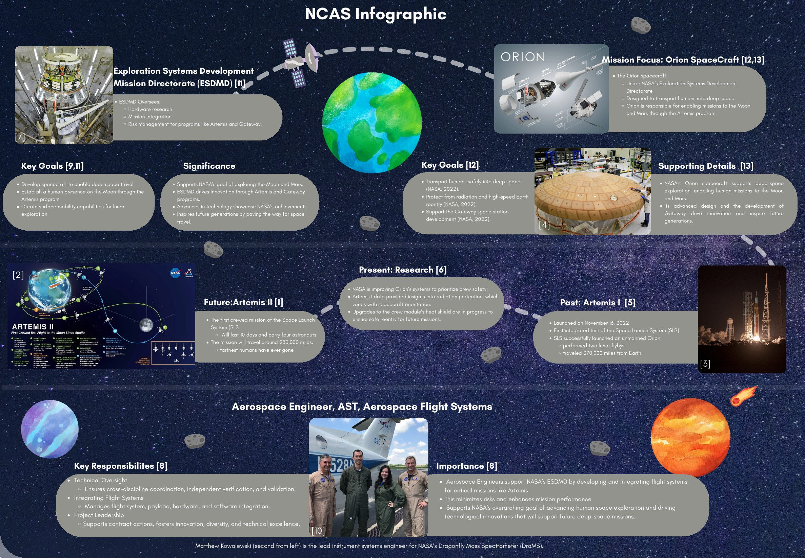

Systems / Leadership
NASA NCAS Mission Experience
Mission research to simulated Mars systems design | Sep 2024 - Feb 2025

My NASA Community College Aerospace Scholars experience progressed through two connected stages. I first researched a real NASA mission directorate, spacecraft, and engineering career. I then applied that systems-level perspective as project manager for Ares Abode, a multidisciplinary simulated mission to establish a sustainable research presence on Mars.
Stage One: NASA mission research
ESDMD, Orion, Artemis, and aerospace flight systems
I researched NASA's Exploration Systems Development Mission Directorate and how it integrates hardware development, mission planning, and risk management across programs such as Artemis and Gateway. My mission focus was Orion, the crewed spacecraft designed to carry astronauts into deep space and support future exploration of the Moon and Mars.
The research connected past, present, and future work: Artemis I demonstrated the integrated launch and spacecraft system; ongoing radiation and heat-shield research informs crew safety; and Artemis II extends that learning into a crewed mission. I also studied the responsibilities of an Aerospace Engineer in flight systems, including technical oversight, system integration, verification, validation, and project leadership.

Stage Two: Ares Abode
Designing a sustainable simulated mission to Mars
Our mission concept used two crewed rockets to establish a Mars research center focused on plant growth, signs of life, planetary materials, and in-situ resource utilization. The architecture combined habitat, communication, entry-descent-and-landing, mobility, power, computing, instruments, mechanical systems, and launch vehicles into one coordinated plan.
As project manager, I coordinated the multidisciplinary work and kept the mission goals, subsystem decisions, schedule, and budget aligned. The final design achieved its scientific-return target, met the modeled power requirement, and produced positive lift results for both launch vehicles.
Recovering from a mission-design failure
Payload capacity, schedule changes, and systems coordination
During the mock mission, the integrated lander exceeded the payload capacity of a single launch vehicle. Rather than removing critical mission capability, the team redesigned the architecture to distribute the mass across two rockets.
That decision created a second-order systems problem: the schedule, budget, launch sequence, and subsystem allocation all had to be updated together. Coordinating the change across the engineering groups allowed the complete mission payload to reach Mars while preserving the broader research objectives.
| Constraint | Team response | System impact |
|---|---|---|
| Single-launch payload exceeded | Split mission mass across two rockets | Preserved the complete payload |
| Second launch required | Reworked mission schedule and sequencing | Added coordination and timing complexity |
| Rocket test failure | Absorbed a $20M budget setback | Finished with $5M remaining |
Leadership and team integration
Aligning specialized work around one mission
The mission depended on specialists in safety, science communication, public affairs, computing, instruments, surface operations, materials, mechanical systems, and systems engineering. My role was to keep those contributions connected to the same requirements and to help the team make tradeoffs when one subsystem affected another.
We also developed an outreach plan that translated the technical work into an accessible mission story. The final poster brought together the mission rationale, subsystem choices, challenge response, schedule, budget, sustainability approach, and public communication plan.


What the two stages taught me
Research first, systems decisions second
Stage One taught me how NASA frames exploration through mission directorates, spacecraft, research questions, and specialized engineering roles. Stage Two turned that context into action: requirements had to become subsystem choices, subsystem choices had to fit a schedule and budget, and unexpected failures had to be resolved without losing the mission objective.
The experience strengthened my project coordination, technical communication, and systems thinking. It also showed me that leadership in engineering is less about owning every technical answer and more about helping specialists share information, recognize dependencies, and make defensible decisions together.